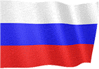
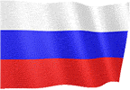

GUIDE DU JEU v3
Sélectionnez la langue du guide de jeu.


 



GAMEPLAY GÉNÉRAL
● Le but du jeu est de conquérir le monde entier en effectuant des opérations terrestres ou en utilisant l'agence secrète.
● Vous pouvez utiliser des options liées à l'économie, à la sécurité et à la gestion du pays sur l'écran de jeu.
● Pour passer au jour suivant, vous devez utiliser la flèche en bas à droite de l'écran de jeu.
● Le revenu quotidien et la population quotidienne sont ajoutés à tous les états dans les transitions de jour.
● Lorsque la journée est terminée, d'autres États peuvent faire des offres à votre pays ou des événements mondiaux aléatoires peuvent se produire.
● Les décisions que vous prenez sur les offres et les situations peuvent affecter votre économie, votre population et vos relations avec d'autres gouvernements.
ÉCONOMIE
● Vous pouvez gagner de l'argent en investissant dans votre pays.
● Vous pouvez gagner de l'argent en choisissant un taux d'imposition.
● Vous pouvez gagner de l'argent en traitant les ressources minérales trouvées.
● Vous pouvez faire des investissements en envoyant vos hommes d'affaires dans d'autres pays.
● Vous gagnez un revenu quotidien des institutions publiques.
● La recherche en usine et en industrie vous rapporte un revenu supplémentaire.
● Vous gagnez de l'argent supplémentaire de chaque touriste qui vient dans votre pays.
● Vous pouvez soutenir votre économie en retirant des prêts.
● Si vous conquérez des pays, vous gagnerez un grand prix unique.
● 100% du revenu quotidien des pays que vous occupez vous est ajouté.
● (Vous pouvez le vérifier dans la section Statistiques - Produit de la conquête.)
● Vous pouvez gagner de l'argent en effectuant des opérations depuis la section Homeland Security.
● Vous pouvez gagner de l'argent en effectuant des cyberattaques sur d'autres pays.
● Vous pouvez gagner de l'argent en déclarant une mobilisation nationale.
● Vous pouvez gagner de l'argent en utilisant vos services secrets.
CENTRE D'OPÉRATION
● Vous pouvez envahir des pays avec des opérations terrestres.
● Si vous réussissez la campagne au sol, vous gagnerez des points de capture.
● Si le point d'invasion atteint 100%, le pays sera conquis.
● Vous pouvez affaiblir l'armée du pays ennemi avec des frappes aériennes.
● Vous pouvez effectuer des cyberattaques sur d'autres pays.
● Vous pouvez utiliser les options supplémentaires en activant le bâtiment du consulat.
● Vous pouvez obtenir des rapports militaires, économiques et détaillés en plaçant des espions dans les pays.
● Vous pouvez conclure des accords d'amitié avec les pays avec lesquels vous êtes en guerre.
● Vous pouvez faire toutes les attaques avec des autorisations.
● Vous pouvez appliquer un embargo aux pays.
PRODUCTION DOMESTIQUE
● Vous pouvez fabriquer le produit que vous souhaitez à partir de la section de production.
● Vous devez envoyer des demandes commerciales aux pays pour vendre vos produits.
● Vous pouvez négocier les prix des produits que d'autres pays souhaitent acheter.
● Seuls les pays amis souhaitent vous acheter des produits.
● Plus vous avez de variété de produits, plus vous avez de chances de négocier.
● Vous pouvez augmenter les prix de vos offres en améliorant vos relations commerciales avec d'autres pays.
SÉCURITÉ PERSONNELLE
● Les pays avec lesquels vous êtes en guerre peuvent vous assassiner.
● Vous devriez considérer le rapport du conseiller.
● Pour vous protéger des assassinats, vous devez nommer un conseiller hautement protecteur.
● Vous devez également mettre à niveau les packages de support.
ORGANISATION SECRET
● Vous pouvez déclencher des émeutes dans d'autres pays en créant les services secrets.
● Vous pouvez assassiner avec les services secrets.
● Vous ne pouvez utiliser que du personnel formé pour les opérations.
● Votre personnel qualifié et vos armes augmenteront votre force opérationnelle.
ASSEMBLÉE et ÉLECTIONS
● Les élections ont lieu tous les 365 jours.
● Pour gagner des élections, vous devez obtenir le plus grand nombre de voix.
● Si vous réussissez dans vos choix, vous gagnerez de l'argent supplémentaire.
● Faites des lois, des rassemblements, distribuez de l'argent, interviewez pour gagner des votes.
● Si vous perdez les élections, vous devez intervenir dans les 8 jours.
● Si l'intervention militaire échoue, le jeu est terminé.
(PREMIUM) ALLIANCES MONDIALES
● Vous pouvez former votre propre alliance ou conclure des alliances existantes.
● Vous pouvez organiser des réunions avec des États alliés.
● Vous pouvez gagner de l'argent en remplissant les demandes des États alliés.
● La recherche d'alliance active des options supplémentaires.
● Vous pouvez renforcer votre défense en utilisant des productions d'alliance.
● Vous pouvez mener des opérations conjointes avec des États alliés.
● Si vous attaquez des États membres de la même alliance, vous pouvez être expulsé de l'alliance.
(PREMIUM) NATIONS UNIES
● Vous pouvez voter 5 résolutions différentes en utilisant les Nations Unies.
● Des décisions de soutien financier ou de sanctions économiques peuvent être prises pour d'autres pays.
● De nouvelles décisions ne peuvent être prises tant que les décisions actives ne sont pas terminées.
● Seuls les pays non conquis votent dans les décisions.
(PREMIUM) INDUSTRIE LOURDE
● 5 armes et équipements personnalisés différents peuvent être produits par l'industrie lourde.
● Seuls les pays amis avec des demandes commerciales peuvent vous envoyer une demande commerciale.
● Les armes produites ne peuvent pas être utilisées dans les batailles.
GAGNER ET PERDRE
● Si vous conquérez tous les pays à 100%, vous gagnez la partie.
● Si votre argent est inférieur à -20 000 000, le jeu est terminé.
● Si le bonheur est inférieur à 0, le jeu est terminé.
À PROPOS DE
● Vous pouvez partager le contenu que vous souhaitez ajouter et vos suggestions avec nous.
● Vous pouvez nous joindre par mail depuis la page à propos du jeu.
● Nous serons heureux si vous marquez notre jeu.
● Bons jeux.